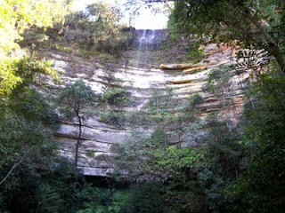
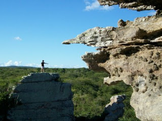
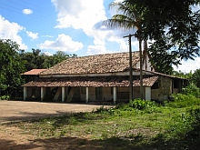

Informações técnicas sobre relevo, população, IDH etc.
| INFORMAÇÕES | |
|---|---|
| Municípios limítrofes | Norte: Carnaubal, São Benedito, Graça, Leste: Reriutaba, Ipu, Sul: Croatá, Oeste: Piauí |
| Fundação | 12 de maio de 1791 (230 anos) |
| População total | 40 784 hab. |
| Densidade | 611,463 km² |
| Área total | 486,859 km² |
| Clima | Tropical de altitude |
| Altitude | 950 m |
| IDH | 0,715 — alto |
| PIB | R$ 405.996 |
| INFORMAÇÕES TERRITORIAIS | |
|---|---|
| Número de habitantes | 40 642 habitantes |
| Superfície de Guaraciaba do Norte |
61 146 hectares
611,46 km² (236,09 sq mi) |
| Densidade populacional | 66,5 ha./km² |
| Altitude de Guaraciaba do Norte | 897 metros de altitude |
| Coordenadas geográficas decimais |
Latitude:
-4.16697
Longitude: -40.7499 |
| Coordenadas geográficas sexagesimais | Latitude: 4° 10' 1'' Sul , Longitude: 40° 44' 60'' Oeste |
| INFORMAÇÕES DO MUNICÍPIO | |
|---|---|
| Endereço da Prefeitura Municipal de Guaraciaba do Norte |
Guaraciaba do Norte
Prefeitura de Guaraciaba do Norte
Av. Monsenhor Furtado, 55 GUARACIABA DO NORTE - CE, 62380-000 Brasil Work (88) 3652-2111 Fax (88) 3652-1255 |
| Telefone da prefeitura |
(88) 3652-2111
Internacional: +55 (88) 3652-2111 |
| Fax |
(88) 3652-1255
Internacional: +55 (88) 3652-1255 |
| Endereço electrónicoda prefeitura |
A carregar...
|
| Site oficial do município | GuaraciabadoNorte.ce.gov.br |
| INFORMAÇÕES DO ADMINISTRATIVAS | ||
|---|---|---|
| Prefeito de Guaraciaba do Norte | ANTONIO ADAIL MACHADO CASTRO | |
| Partido politico | MDB | |
| INFORMAÇÕES DE TRANSPORTE | |
|---|---|
| Transporte urbano disponível | --- |
| Aeroporto |
Aeroporto de Sobral 70.8 km
Aeroporto Pinto Martins 140.1 km
Aeroporto Internacional Prefeito Dr.João Silva Filho 178.9 km
|
| INFORMAÇÕES DE DISTÂNCIA A OUTRAS CIDADES | ||
|---|---|---|
| São Paulo : 2248 km | Rio de Janeiro : 2102 km | Brasília : 1513 km |
| Salvador : 1010 km | Belo Horizonte : 1776 km | Manaus : 2145 km |
| Curitiba : 2536 km | Recife : 780 km mais perto | Goiânia : 1674 km |
| Belém : 913 km | Porto Alegre : 3083 km | Guarulhos : 2228 km |
| Campinas : 2194 km | São Luís : 435 km | São Gonçalo : 2182 km |
| Distância calculada em linha reta! | ||
Conheça mais sobre a história de Guaraciaba do Norte.
Guaraciaba do Norte foi elevado à categoria de "vila" com a denominação de Vila Nova Del Rei em 12 de maio de 1791, mas somente foi elevado à categoria de município em 1879. Recebeu a sua atual denominação Guaraciaba do Norte somente em 1951.
Saiba mais sobre os melhores lugares e o que fazer em Guaraciaba do Norte.
Cachoeira da Mata Fresca
A Cachoeira fica a 19 km da sede do município, localizada no sítio Santa Maria, o acesso é fácil para quem gosta de esporte de aventura e o banho nas águas geladas que escorre entre rochas, com a queda de mais de 40 m de altura, local que atrai muitos visitantes todos os dias.
Cidade de Pedras
Fica a 28km do Centro da do município, no sítio Descoberta. Esculpidas pela mãe natureza, aproximadamente 5(cinco)metros de altura, localizada no meio de uma colônia de pedras em formatos de cidade, por isto tem o nome Cidade de Pedras. A cidade de pedras mostra vários formatos de rochas esculpidos pela ação do vento e da chuva, que é constante na Serra Grande. A foto ao lado é de uma formação rochosa de uma coruja gigante.
Casarão Antigo (Casa dos Escravos)
Localizado no sítio Tamboatá a 1 km da sede de Guaraciaba do Norte, que segundo informações do Sr. Francisco Torres Lemos, pertenceu ao Dr. Floro Bartolomeu, de Juazeiro do Norte. Aliado político do Pe. Cícero e, lá, hoje se encontra uma das casas mais antigas do Município, que pela narrativa de Antonio Bezerra, leva-nos a entender ter pertencido ao Pe. Manoel Pacheco Pimentel. Segundo Bezerra, foi lá (em Tamboatá), que o Pe. Pacheco deu começo ao cultivo de café, cana e de outras plantas, que depois se divulgaram pelo Município; plantas estas trazidas de viagens à Portugal e Rio de Janeiro e caracteriza Tamboatá como a mais bem montada fazenda que na Serra Grande. À época, pertencia ao Coronel João Evangelista da Frota, atualmente ao Sr. Luciana de Sousa Reis, sendo sua última moradora a Sra. “Chiquinha do Seu Marú”. Hoje o casarão serve de estudos históricos e de visitação para os curiosos da cultura do município. Construído no século XVIII, encontra-se disponível ao público durante todo o dia. No seu interior ainda existem vestígios dos maus tratos feitos aos escravos da época.O casarão é conhecido como CASA DOS ESCRAVOS, devido os relatos de alguns moradores e vizinhos. Por avistarem negros trabalhando de maneira escrava e sendo mortos e enterrados no mesmo local. Contam que o porão servia de local de tortura e cemitério para os negros que desrespeitavam seus patrões.
Veja como chegar nos melhores pontos de Guaraciaba do Norte